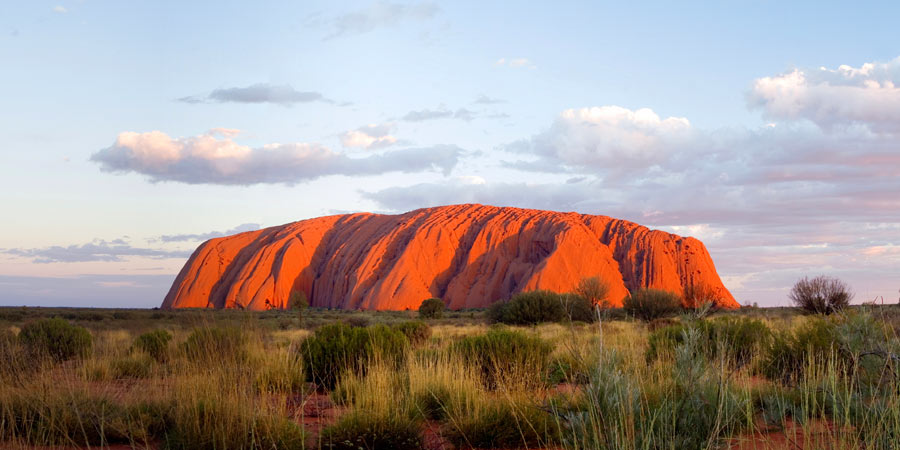

Australia is the only country in the world that covers an entire continent. It is one of the largest countries on Earth. Although it is rich in natural resources and has a lot of fertile land, more than one-third of Australia is desert.
Most Australian cities and farms are located in the southwest and southeast, where the climate is more comfortable. There are dense rain forests in the northeast. The famous outback (remote rural areas) contains the country's largest deserts, where there are scorching temperatures, little water, and almost no vegetation.
Running around the eastern and southeastern edge of Australia is the Great Dividing Range. This 2,300-mile (3,700-kilometer) stretch of mountain sends water down into Australia's most important rivers and the Great Artesian Basin, the largest groundwater source in the world.

When to go
This continent has so many beautiful places to visit within different time zones. Hence, answering the question of when is the best time to visit Australia is not as easy as it seems to be. It entirely depends upon your interest, preferences, budget, and most importantly your ideal climate. From December to February, the beaches in Sydney seem like heaven on Earth. Summer is a great time in Australia to get outdoors and take a dip in the beach or even hike the Overland Track of Tasmania.
March to May is the time for autumn when the entire town of Canberra lights up with the fiery foliage and Melbourne gears up for a Formula 1 Grand Prix. Towards the mid-end of the year, from June to August, the winters in Australia offer snow skiing amidst the Australian Alps. Otherwise, you can also opt for Snorkeling in the Great Barrier Reef, or even Australia's Simpson Desert is a great option for a perfect winter getaway. While in the spring from September to November you can watch out for whales and flowers in the wineries of Margaret River region in Western Australia.
May to October is a dry season sporting crystal blue skies and days gleaming with sunshine. Darwin's outdoor market, festivals, and movies are a great option to explore during this season. The wet season from December to March has some rainstorms on board with a climate that is hot and humid. Litchfield and Kakadu National Parks are the home for some grumbling waterfalls, where the water levels are the highest during this season. Alternatively, you can also fly over to Katherine George to witness some beautiful waterfalls of Australia.
Culture and customs
Aussies tend to be casual and relaxed and are not very big on formal greetings. When meeting for the first time, generally Australians shake hands, smile and introduce themselves with their first names. They love their laid-back lifestyle and take their time with family and friends very seriously. Picnics, family barbeques, parties, a day at the beach and gatherings at the park are all essential to the Australian way of life.
Giving and exchanging gifts with family, friends, neighbours and workmates on birthdays and Christmas is common. If you have been invited to someone's home for a meal, it is polite to bring a bottle of wine or a box of chocolates for the hosts. Please be punctual as it is impolite if you are late by more than 15 minutes. If your delay is unavoidable, contact and inform your host ahead of time.